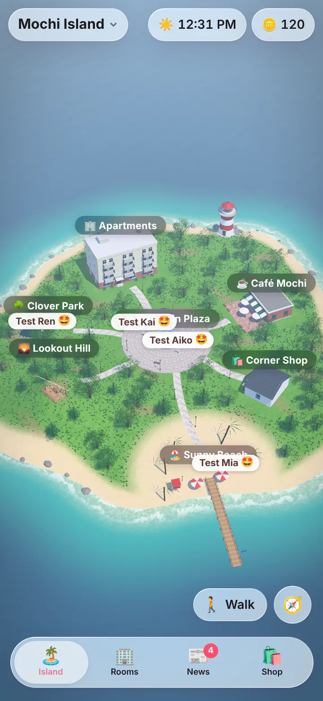
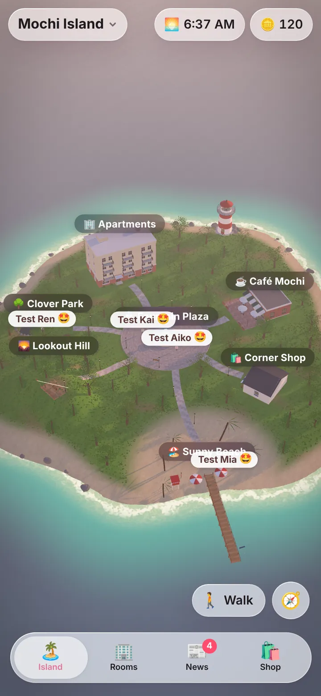
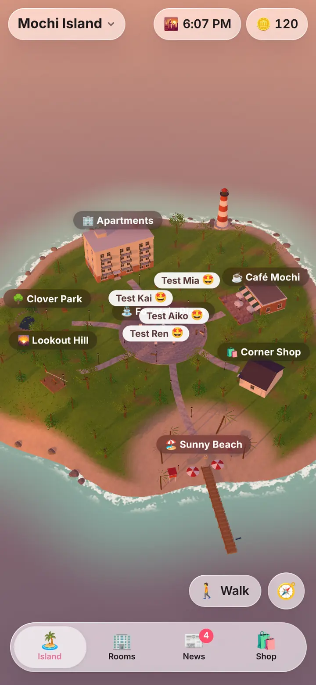
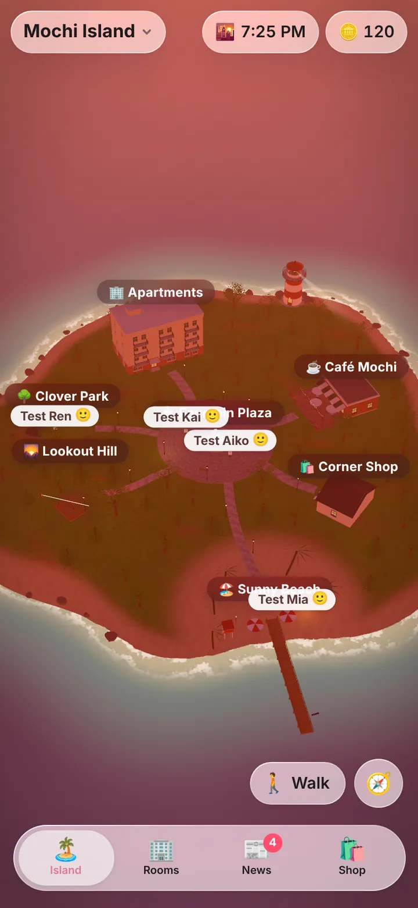
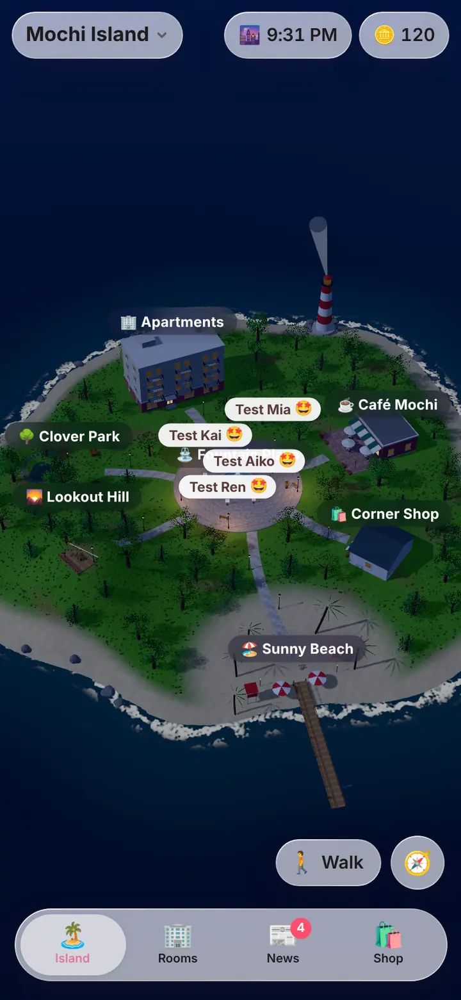

Drag a resident, or focus one and use the arrow keys. Lower on the screen is nearer the camera.
Mochi
A little 3D island that runs in a browser tab. Its residents are rigged and animated in the browser, speak through a local language model, and live under a sky that follows the real time of day.
- What
- A small life sim, in the spirit of Tomodachi Life and The Sims
- Made of
- three.js as plain ES modules with no build step, and a Python standard-library server that keeps the world
- Motion
- Motion-capture clips from Quaternius’ Universal Animation Library (CC0), replayed on each figure’s own rig
- Tests
- About 110: pytest, Node for the rigging maths, and a browser with WebGL in software
- Since
- October 2026
See it through a day
These are captures of the real island on a test save with made-up residents. Drag the dial: the same view at five times of day, lit the way the app lights it.





The island is life-size and lit by the hour: the sun crosses the sky, evenings glow, and at night there are stars, street lamps and lit windows. From above you drag to look around and tap someone to fly over. On foot you walk it with one thumb.
Residents have places to be. They go to the café, the beach, the park or the hill, meet, become friends, fall out and make up. When one of them needs something, a small flag appears over their head.
The page was drawn here by a software renderer for the captures, so there is no recording: it runs far too slowly without a graphics chip to film.
What it is for
I wanted a small world I could look in on from my phone: residents who go about their day, remember what happened and can be talked to, all running on my own PC.
It had to cost nothing while I am not looking, stay smooth on a phone, and get off the graphics card the moment a game starts. Most of the interesting work came from those three constraints.
How it fits together
- A server keeps the worldOne Python process holds who is where, their needs and moods, and what happened. It moves the world on only while the page is open, then catches up on the time away.
- The page draws itthree.js, vendored and loaded as ES modules. There is no bundler and no build step: the repo is the code.
- Figures arrive as meshesEach resident’s 3D figure is a single surface. Newer ones bring a skeleton from a rigging model on the PC. For the rest, the page works out how the mesh should bend.
- A local model gives them wordsWhen the model server is awake and free, it writes what each resident says. When it is busy, the island falls back on lines of its own.
The hard parts
-
Rigging a mesh in the browser
A generated figure can be one surface with no skeleton, and no two stand alike. The page finds the hips, splits the legs by walking the surface of the mesh with shortest paths, finds the chin by measuring where the head narrows, and decides how freely each arm may move, in doubtful cases by trying a pose and measuring how far the mesh stretches.
Splitting legs down the middle smeared any figure whose feet touched or stood one behind the other. Following the surface does not. Rigging runs in a worker, and the result is kept per figure and per version of the rigging code.
-
Motion capture that fits any figure
Clips are stored without a skeleton, as each bone’s turn from a T-pose, and replayed on whatever rig a figure has. Walking speed comes from the figure’s own leg length, and each arm stays inside the range that was measured as safe for it.
Borrowed animation usually assumes one skeleton. These figures all differ, so the clip had to be the constant and the rig the variable.
-
Fast on a phone, measured first
On a processor slowed four times, every visit spent four to five seconds painting textures and about a second rigging each figure, all on the page’s own thread.
Painted textures are now kept in the browser under a hash of the code that paints them. Rigs come from the worker. The frame rate follows what is happening: up to 60 a second while you steer, a trickle when nothing moves, and none at all after a few minutes untouched. The page tries a lower resolution when frames run late and keeps it only if that helps, and by day the street lamps are left out of the shaders altogether.
-
Idle means idle
The world advances only while its page is open. It never wakes the model server on its own, and it lets go of the graphics card completely while a game runs.
It shares a PC with everything else I run. A toy that keeps a 24 GB card warm is not a toy I would leave on.
Try one of the small ones
Five residents in the plaza used to show one name on top of the next. Now the nearest keeps their name by their head and the others stack above it, every frame, with no layout work in the loop. This is the same routine, ported to plain page elements.
How it is verified
- The rigging and motion code is tested in Node on made-up figures, by counting the edges a pose stretches too far. Fixes came with a figure that reproduces the tear.
- The page itself is tested in a real browser, with WebGL drawn in software where the island is needed: who is where, names that never overlap, walking indoors, pulling sheets closed.
- Every test island gets its own data folder and made-up residents. The captures above were taken the same way.
Where it meets backend work
Less directly than the other two. It is here because its problems were the least forgiving: a figure either moves right or visibly tears. The habits are the same, though: measure before optimising, cache by a hash of what produced the value, move slow work off the request path, and make the difficult part testable without the expensive part, which here means testing a rig without a graphics card.
How it was built
I built Mochi with Claude Code. I describe what I want and what looks wrong when I use it, and I decide what stays. Claude wrote the code and the tests. The workflow is written up here.
Known limits
- It cannot be played from this page. The island needs its server, and the code is private.
- The 3D figures come from a separate pipeline on my model stack. Until a resident has one, they are a flat standee of their picture.
- Arms that were generated fused to the body stay where they were made. Moving them tore the mesh, so the rig leaves them alone.